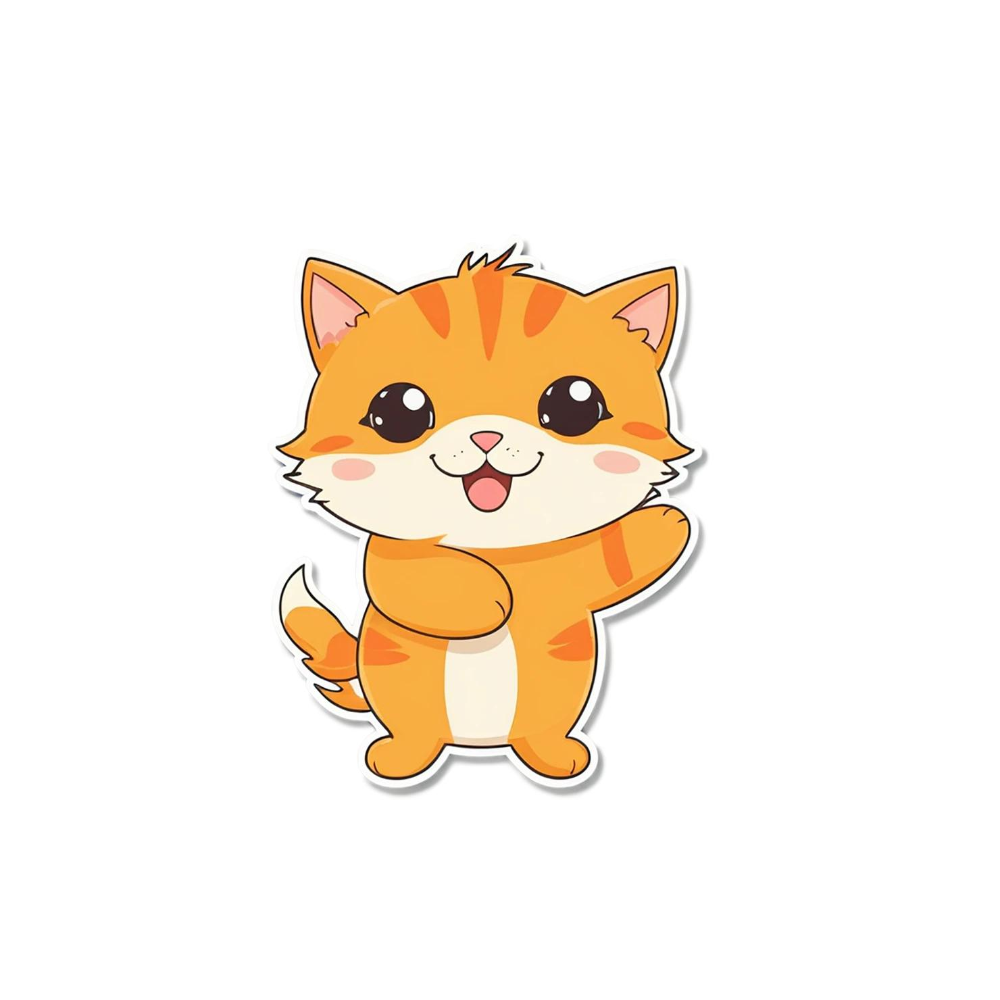
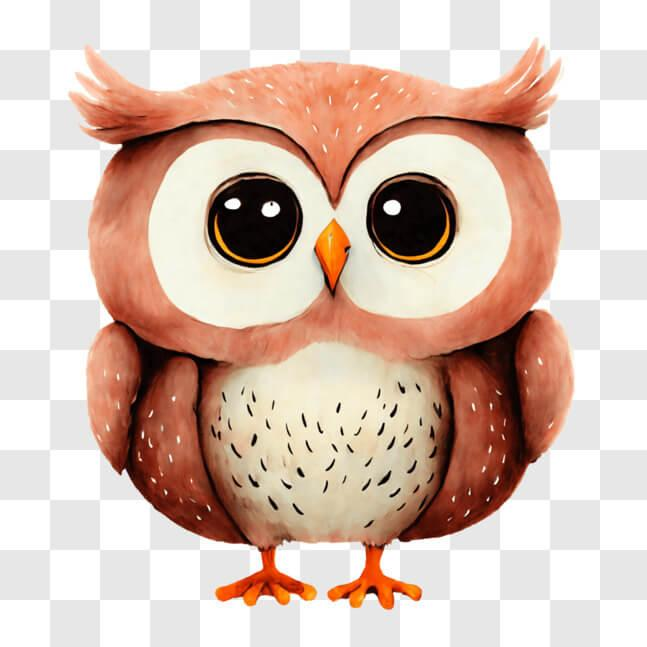
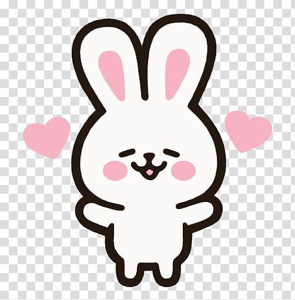
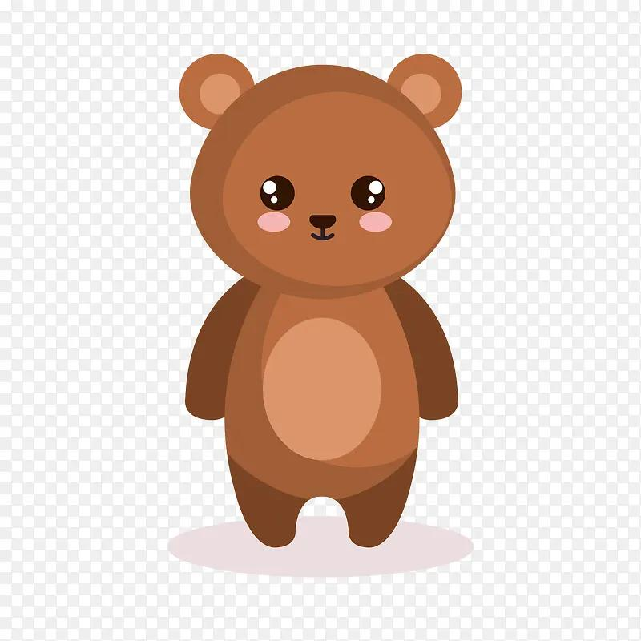

🌿 FOREST PERSONALITY
A LITTLE JOURNEY INTO YOU
Trong khu rừng này,
bạn là loài vật nào?
Mỗi loài vật đều có một nét tính cách riêng. Hãy trả lời 20 câu hỏi nhỏ để khám phá xem bạn mang tâm hồn của loài vật nào nhé!




🍃 20 câu hỏi · Khoảng 3–5 phút · Chỉ để giải trí